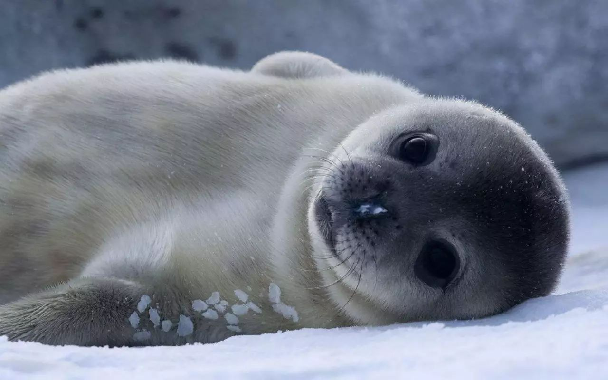
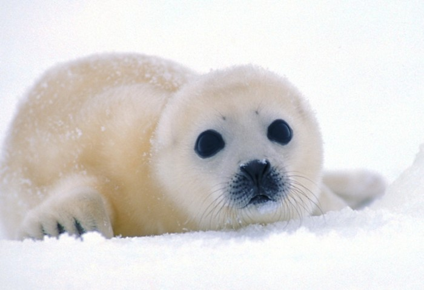
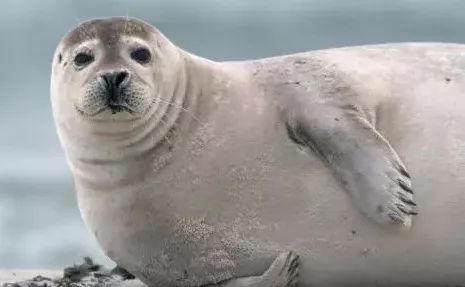
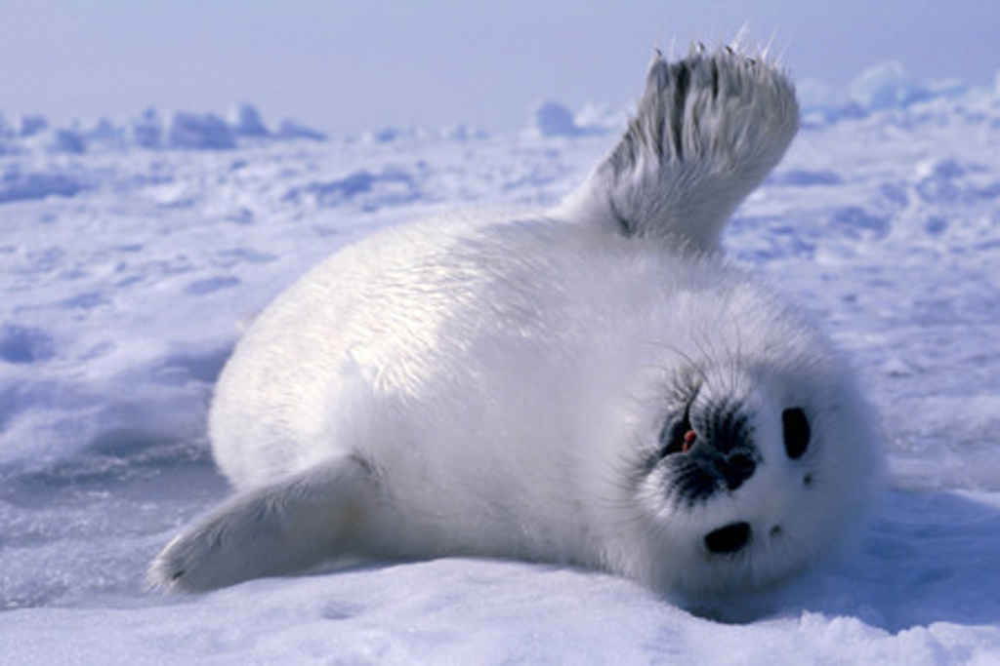

海豹是海洋动物，哺乳动物(胎生)。它们的身体呈流线型，四肢变为鳍状，适于游泳。海豹有一层厚的皮下脂肪保暖，并提供食物储备，产生浮力。海豹身体均呈纺锤形，适于游泳，头部圆圆的，貌似家犬，全身被毛，前肢短于后肢。
海豹的前脚较后脚为短，覆有毛的鳍脚皆有指甲，指甲为5趾。耳朵变得极小或退化成只剩下两个洞，游泳时可自由开闭。游泳时大都靠后脚，但后脚不能向前弯曲，脚跟已退化与海狮及海狗等相异，不能行走，所以当它在陆地上活动时，总是拖著累赘的后肢，将身体弯曲爬行，并在地面上留下一行扭曲痕迹。海狮、海象是海豹的近亲，它们有耳壳，后肢能转向前方来支持身体。
海豹是鳍足类中分布最广的一类动物，从南极到北极，从海水到淡水湖泊，都有海豹的足迹。南极海豹数量为最多，其次是北冰洋、北大西洋、北太平洋等地。
海豹生活在寒温带海洋中，除产仔、休息和换毛季节需到冰上、沙滩或岩礁上之外，其余时间都在海中游泳、取食或嬉戏。繁殖期不集群，仔兽出生后，组成家庭群，哺乳期过后，家庭群结束。在冰上产仔，当冰融化之后，幼兽才开始独立在水中生活。少数繁殖期推后的个体则不得不在沿岸的沙滩上产仔。以鱼类为主要食物，也食甲壳类及头足类。
在自然条件下，海豹有时在海里游荡，有时上岸休息。上岸时多选择海水涨潮能淹没的内湾沙洲和岸边的岩礁。例如，在中国的辽宁盘山河口及山东庙岛群岛等地都屡见有大群海豹出没。海豹的游泳本领很强，速度可达每小时27公里，同时又善潜水，一般可潜100米左右，南极海域中的威德尔海豹则能潜到600多米深，持续43分钟。海豹主要捕食各种鱼类和头足类，有时也吃甲壳类。它的食量很大，一头60～70kg重的海豹，一天要吃7～8kg鱼。
海豹社会实行“一夫多妻”制。雄海豹拥有妻室的多少在很大程度上是依据该海豹的体质状况而定，年轻体壮的雄海豹往往有较多的妻室。 在发情期，雄海豹便开始追逐雌海豹，一只雌海豹后面往往跟着数只雄海豹，但雌海豹只能从雄海豹中挑选一只。因此，雄海豹之间不可避免地要发生争斗，狂暴的海豹彼此给予猛烈地伤害：用牙齿狠咬对方有些雄海豹的毛皮便因此而撕破，鲜血直流。战斗结束，胜利者更和母海豹一起下水，在水中交配，而其它海豹只能以失败而告终，继续去寻找属于自己的“妻子”。
海豹的繁殖特点是：产仔、哺乳、育儿必须到陆上或冰上来。
海豹的发情期在12月，妊娠时间为9个月，幼崽出生在次年11月初，平均每次生产一只小海豹。小海豹生长到4～6周时断奶。雌、雄性海豹均2～4年性成熟。不同种类的海豹繁殖的时间有少许差异，但区别不大。
